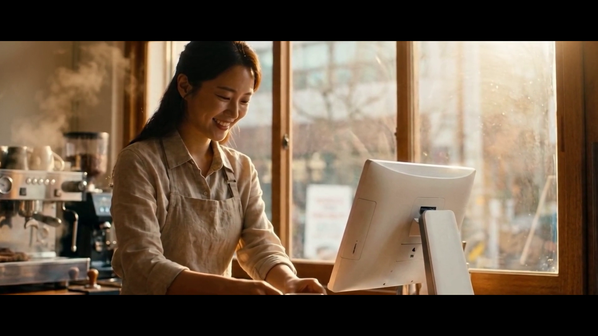
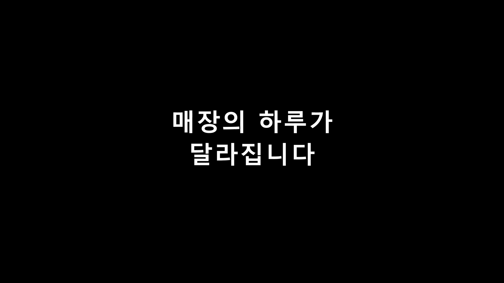
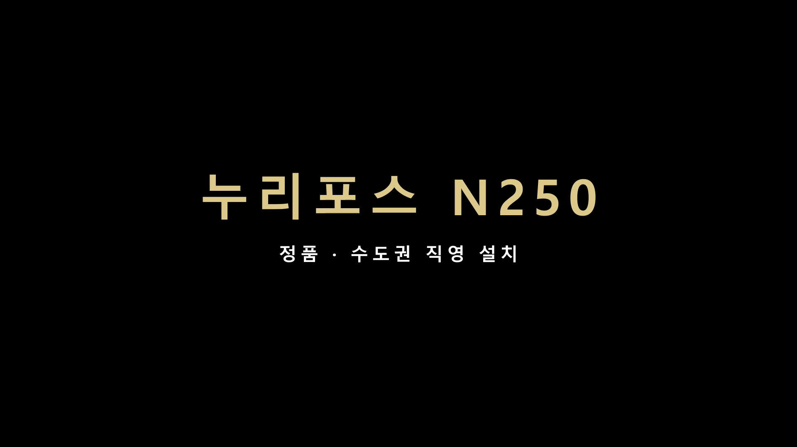

누리포스 N250 · 27초 · 16:9 · After Effects 자동 조립(한글 타이포)



| 구성 | 카페(아침) → 타이틀 → 비스트로(저녁) → "14년 · 3만 매장의 선택" → 베이커리(낮) → 누리포스 N250 골드 리빌 → 표준 엔드카드 |
|---|---|
| 소스 | 힉스필드 시네마틱 3클립 (N250 실제품 레퍼런스, 한국인 20~30대, 실사 다큐 톤) |
| 조립 | After Effects 2026 — 클로드가 스크립트로 자동 조립 (컴포지션·크로스페이드·슬로우 줌·2.35:1 레터박스·한글 타이틀 4장 = 100% 정확) |
| 음악 | 서정 발라드 (CC0 · Komiku "Uncoin Ballad") |
| 규격 | 1920×1080 · 30fps · 27초 (본편 24초 + 엔드카드) |
누리네트웍스 내부 검수용 · 검색 비노출